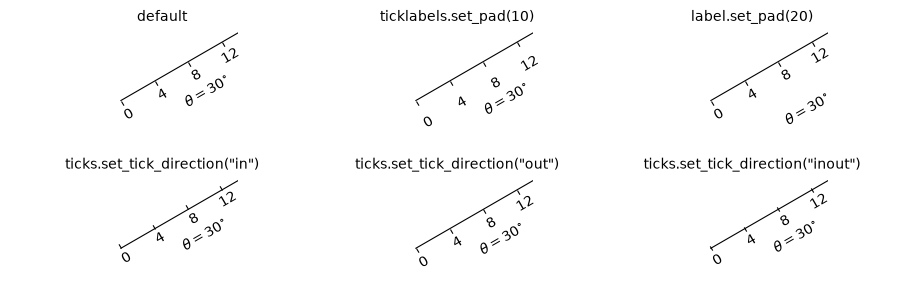

Note
Go to the end to download the full example code.
Simple axis pad#

import matplotlib.pyplot as plt
import numpy as np
from matplotlib.projections import PolarAxes
from matplotlib.transforms import Affine2D
import mpl_toolkits.axisartist as axisartist
from mpl_toolkits.axisartist import angle_helper, grid_finder
from mpl_toolkits.axisartist.grid_helper_curvelinear import GridHelperCurveLinear
def setup_axes(fig, rect):
"""Polar projection, but in a rectangular box."""
# see demo_curvelinear_grid.py for details
grid_helper = GridHelperCurveLinear(
Affine2D().scale(np.pi/180., 1.) + PolarAxes.PolarTransform(),
extreme_finder=angle_helper.ExtremeFinderCycle(
20, 20,
lon_cycle=360, lat_cycle=None,
lon_minmax=None, lat_minmax=(0, np.inf),
),
grid_locator1=angle_helper.LocatorDMS(12),
grid_locator2=grid_finder.MaxNLocator(5),
tick_formatter1=angle_helper.FormatterDMS(),
)
ax = fig.add_subplot(
rect, axes_class=axisartist.Axes, grid_helper=grid_helper,
aspect=1, xlim=(-5, 12), ylim=(-5, 10))
ax.axis[:].set_visible(False)
return ax
def add_floating_axis1(ax1):
ax1.axis["lat"] = axis = ax1.new_floating_axis(0, 30)
axis.label.set_text(r"$\theta = 30^{\circ}$")
axis.label.set_visible(True)
return axis
def add_floating_axis2(ax1):
ax1.axis["lon"] = axis = ax1.new_floating_axis(1, 6)
axis.label.set_text(r"$r = 6$")
axis.label.set_visible(True)
return axis
fig = plt.figure(figsize=(9, 3.))
fig.subplots_adjust(left=0.01, right=0.99, bottom=0.01, top=0.99,
wspace=0.01, hspace=0.01)
def ann(ax1, d):
ax1.annotate(d, (0.5, 1), (5, -5),
xycoords="axes fraction", textcoords="offset points",
va="top", ha="center")
ax1 = setup_axes(fig, rect=231)
axis = add_floating_axis1(ax1)
ann(ax1, "default")
ax1 = setup_axes(fig, rect=232)
axis = add_floating_axis1(ax1)
axis.major_ticklabels.set_pad(10)
ann(ax1, "ticklabels.set_pad(10)")
ax1 = setup_axes(fig, rect=233)
axis = add_floating_axis1(ax1)
axis.label.set_pad(20)
ann(ax1, "label.set_pad(20)")
ax1 = setup_axes(fig, rect=234)
axis = add_floating_axis1(ax1)
axis.major_ticks.set_tick_direction("in")
ann(ax1, 'ticks.set_tick_direction("in")')
ax1 = setup_axes(fig, rect=235)
axis = add_floating_axis1(ax1)
axis.major_ticks.set_tick_direction("out")
ann(ax1, 'ticks.set_tick_direction("out")')
ax1 = setup_axes(fig, rect=236)
axis = add_floating_axis1(ax1)
axis.major_ticks.set_tick_direction("inout")
ann(ax1, 'ticks.set_tick_direction("inout")')
plt.show()